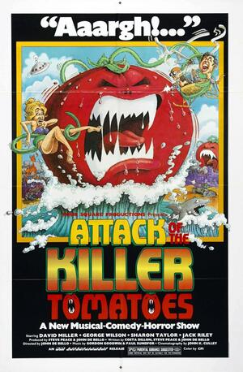

El ataque de los tomates asesinos

Desplegar info
Los tomates, están cobrando vida y están asesinando a los humanos. Se sospecha que este hecho está provocado por un pesticida creado por un loco que quiere el control del mundo. Sólo un agente especial y su comando lucharán para detener la invasión de tomates que se avecina... y que amenaza a la humanidad con el exterminio.
| Año | 1978 |
|---|---|
| Nacionalidad | EEUU |
| Director | John de Bello |
| Actores principales | David Miller, Sharon Tailor |